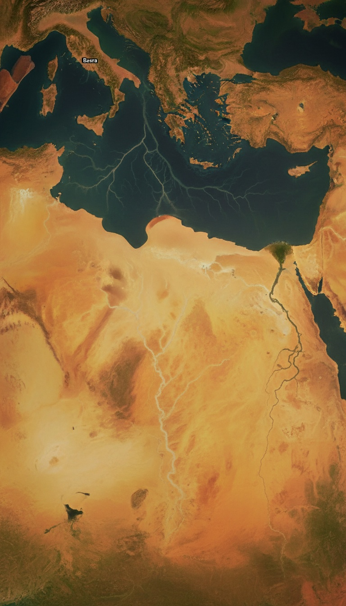

The Bible gave the Garden of Eden a physical address, listed four rivers by name, and modern satellite imaging just found two of them.
The basin they all point to is sitting under the Persian Gulf.

Genesis 2:10-14 Reads Like a Survey Map, Not a Myth
The passage names four rivers flowing out of Eden. The Pishon, which winds through the land of Havilah where there is gold. The Gihon, which flows around the land of Cush. The Hiddekel, identified in the text as running east of Assyria. The Euphrates, named without qualification because the audience already knew it.
Two of those four rivers appear on every modern map of Iraq. The Hiddekel is the Tigris. The Euphrates still runs from the Taurus Mountains of Turkey through Baghdad and down to the Shatt al-Arab waterway near Basra. The other two vanished from history, and for centuries scholars treated the entire list as poetic geography.
The Pishon Was Found in 1993 by a Boston University Geologist
Farouk El-Baz, director of the Center for Remote Sensing at Boston University and a former NASA advisor on the Apollo landing sites, spotted something in Landsat imagery of northern Arabia. A fossil riverbed, roughly 850 kilometers long, running from the Hijaz Mountains in western Saudi Arabia northeast toward Kuwait.
James Sauer, an archaeologist who had worked with the American Schools of Oriental Research and later curated at the Harvard Semitic Museum, published the identification in BAR magazine in July 1996 under the title "The River Runs Dry." Sauer argued the dry channel, now called the Wadi al-Batin and the Wadi al-Rummah system, was the Pishon of Genesis.
The riverbed passes directly through the Mahd adh-Dhahab region. Mahd adh-Dhahab translates as "Cradle of Gold." It has been mined since the reign of King Solomon and is still producing gold today under the Saudi state mining company Ma'aden. Genesis said the Pishon wrapped around a land of gold. The dry channel wraps around an active gold field.
The Persian Gulf Was Dry Land During the Last Ice Age
Marine geologist Kurt Lambeck at the Australian National University published sea level reconstructions in Earth and Planetary Science Letters in 1996 showing the Persian Gulf basin was exposed land as recently as 12,000 years ago. Sea levels were roughly 120 meters, about 400 feet, below current levels.
The floor of the Gulf is unusually shallow and flat. Average depth is only 35 meters. It was a broad river valley, not a sea, during the glacial maximum. The Tigris and Euphrates ran through it and emptied into the Gulf of Oman near the Strait of Hormuz.
Jeffrey Rose, an archaeologist at the University of Birmingham, published "New Light on Human Prehistory in the Arabo-Persian Gulf Oasis" in Current Anthropology in December 2010. Rose identified more than sixty archaeological sites ringing the Gulf that appear suddenly around 7,500 years ago, populated by people who seem to have moved uphill from something. He called the exposed basin the Gulf Oasis and proposed it as a refuge for Ice Age populations.
Four rivers converge on one basin. That basin was green, watered, and inhabited. Then the sea rose 400 feet and swallowed it whole.
The Gihon and the Land of Cush
The fourth river is the harder one. Genesis says the Gihon flows around Cush. Cush in later biblical usage refers to Nubia in Africa, which is why some translations point at the Nile. But the earliest usage of Cush points to the Kashshu, the Kassite people who lived in the Zagros Mountains east of Mesopotamia.
The Karun River flows out of the Zagros in modern Iran, joins the Shatt al-Arab north of the Persian Gulf, and once carried enough sediment to build the entire delta plain around Basra. David Rohl, in his 1998 book "Legend: The Genesis of Civilisation," identified the Karun as the Gihon on exactly these grounds.
Line them up. Tigris from the north. Euphrates from the northwest. Pishon from the southwest out of Arabia. Karun from the east out of Iran. All four converge on the head of the Persian Gulf near Basra.
The Sumerians Remembered a Flooded Paradise
The Sumerian text known as Enki and Ninhursag, first translated by Samuel Noah Kramer at the University of Pennsylvania Museum in Philadelphia in the 1940s, describes a place called Dilmun. Dilmun is pure, clean, and bright. It has no sickness. The waters come up from the earth to water it. The tablet is cataloged as CBS 8383 in the Penn Museum's tablet collection.
Dilmun was later identified with Bahrain and the eastern Arabian coast, exactly the region that would have been the last high ground as the Gulf flooded. The Epic of Gilgamesh, whose most complete version sits in tablet form at the British Museum as part of the Kuyunjik collection excavated by Austen Henry Layard in 1849, sends its hero to Dilmun to find the survivor of the flood.
Two independent traditions, Hebrew and Sumerian, place a lost paradise at the head of the Persian Gulf. Both describe it as watered by rivers. Both describe it as lost to water.
Why No One Has Excavated It
The head of the Gulf sits in some of the most politically hostile water on the planet. Iranian territorial claims to the north. Iraqi claims to the west. Kuwaiti and Saudi claims to the south. American and British naval traffic through the middle. No archaeological expedition has ever received permission to conduct systematic underwater survey of the Gulf floor between Kuwait and Bahrain.
Robert Ballard, the oceanographer who found the Titanic, told National Geographic in 2012 that he believed the Gulf was one of the most promising unexplored archaeological zones on Earth. He has not been granted access.
The Genesis writer named four rivers. Two still flow past Baghdad. One was traced by satellite through a live gold field. One drains the Zagros into the same delta. All four point to a basin that was dry land when humans were painting caves at Lascaux.
The map to Eden was printed in chapter two of the first book of the Bible, and the coordinates lead to sixty meters of saltwater off the coast of Basra. Nobody with the equipment to look has been allowed near it. Tell me in the comments which government you think is most afraid of what is down there.
Before you go
7 books the Vatican doesn't want you reading. Free PDF — the texts they cut, with sources. Joined by 140+ Inner Circle members.
No spam. Unsubscribe anytime.
Go deeper
The Hidden Canon, Vol. I — Enoch. Jubilees. Thomas. Mary. Judas. 90 pages, 14 chapters, every receipt cited. The books your Bible quietly removed.
Read the Canon →Books that informed this investigation
As an Amazon Associate, Hidden Epoch earns from qualifying purchases. Cost to you: nothing.
Research safely
The VPN we use to research without being tracked. First 3 months free.
Get NordVPN →